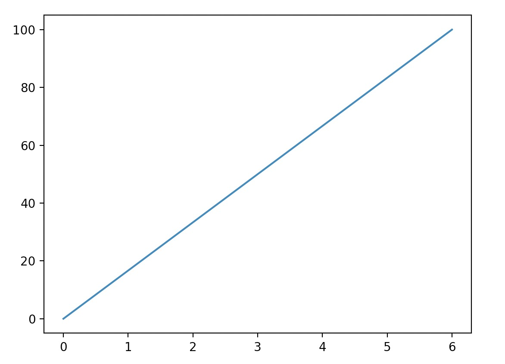
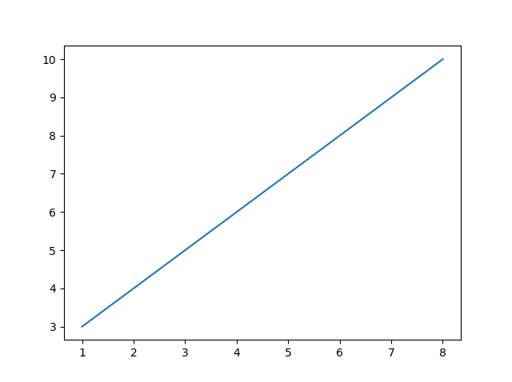
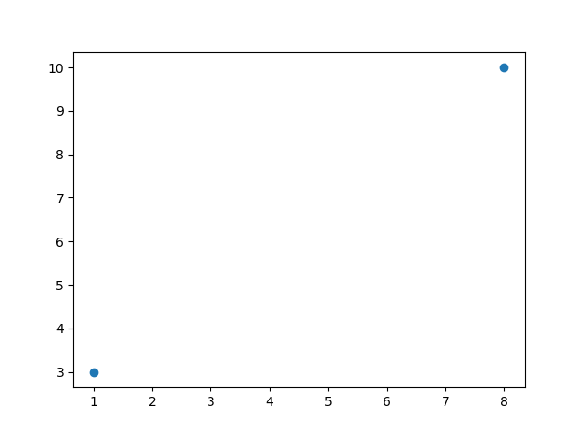
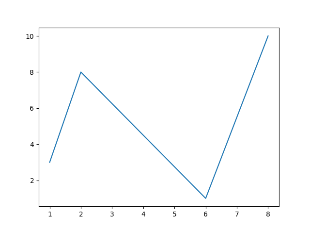
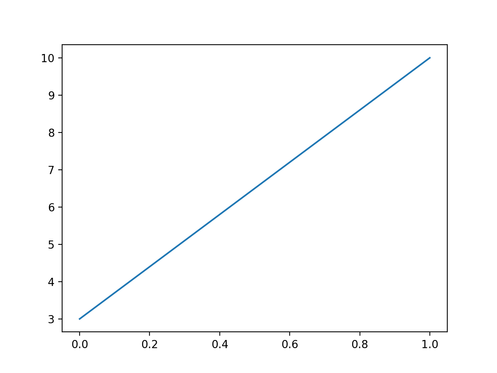
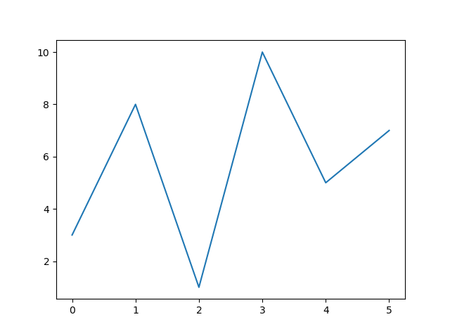

Matplotlib Pyplot
Pyplot は Matplotlib のサブライブラリであり、MATLAB に似たプロット API を提供します。
Pyplot は一般的に使用されるプロットモジュールで、ユーザーが 2D グラフを簡単に描画できます。
Pyplot には一連のプロット関数に関する関数が含まれており、各関数は現在の画像に何らかの変更を加えます。例えば、画像にマーカーを追加する、新しい画像を生成する、画像内に新しいプロット領域を作成するなどです。
使用する際は、import を使用して pyplot ライブラリをインポートし、エイリアスを設定できます。plt：
これにより、次を使用できます。pltPyplot パッケージのメソッドを参照するために。
以下は、よく使われる pyplot 関数の一部です：
plot()：線グラフと散布図の描画に使用されますscatter()：散布図の描画に使用されますbar()：垂直棒グラフと水平棒グラフの描画に使用されますhist()：ヒストグラムの描画に使用されますpie()：円グラフの描画に使用されますimshow()：画像の描画に使用されますsubplots()：サブプロットの作成に使用されます
これらの基本的な関数に加えて、pyplot には、グラフの属性を設定する関数、テキストや注釈を追加する関数、グラフをファイルに保存する関数など、他にも多くの関数が用意されています。
次の例では、2つの座標を使用して(0,0) 到 (6,100)線を描画します：
例
import numpy as np
xpoints = np.array([0, 6])
ypoints = np.array([0, 100])
plt.plot(xpoints, ypoints)
plt.show()
出力結果は次のようになります：

上記の例では、Pyplot のplot()関数を使用しました。plot()関数は、2次元グラフを描画するための最も基本的な関数です。
plot()グラフを描画するために使用され、点と線を描画できます。構文形式は次のとおりです：
# 画单条线 plot([x], y, [fmt], *, data=None, **kwargs) # 画多条线 plot([x], y, [fmt], [x2], y2, [fmt2], ..., **kwargs)
パラメータの説明：
- x, y：点または線のノード。x は x 軸のデータ、y は y 軸のデータで、データはリストまたは配列にできます。
- fmt：オプション。基本形式（色、マーカー、線種など）を定義します。
- **kwargs：オプション。2次元平面グラフに使用し、ラベル、線の幅などの指定属性を設定します。
>>> plot(x, y, 'bo') # y のデータと x の対応する値の2次元線グラフを作成し、青い塗りつぶし円で描画
>>> plot(y) # x の値は 0..N-1
>>> plot(y, 'r+') # 赤い + 記号を使用
色文字：'b' 青、'm' マゼンタ、'g' 緑、'y' 黄、'r' 赤、'k' 黒、'w' 白、'c' シアン、'#0053A6' RGB 色文字列。複数の曲線で色を指定しない場合、自動的に異なる色が選択されます。
線種パラメータ：'‐' 実線、'‐‐' 破線、'‐.' 一点鎖線、':' 点線。
マーカー文字：'.' 点マーカー、',' ピクセルマーカー（極小点）、'o' 塗りつぶし円マーカー、'v' 下向き三角形マーカー、'^' 上向き三角形マーカー、'>' 右向き三角形マーカー、'<' 左向き三角形マーカー...など。
座標 (1, 3) から (8, 10) までの線を描画する場合、2つの配列 [1, 8] と [3, 10] をplot関数に渡す必要があります：
例
import numpy as np
xpoints = np.array([1, 8])
ypoints = np.array([3, 10])
plt.plot(xpoints, ypoints)
plt.show()
上記のコードの出力結果は次のとおりです：

2つの座標点だけを線ではなく描画したい場合は、o塗りつぶし円マーカーを表すパラメータを使用できます：
座標 (1, 3) と (8, 10) の2つの点を描画します
import numpy as np
xpoints = np.array([1, 8])
ypoints = np.array([3, 10])
plt.plot(xpoints, ypoints, 'o')
plt.show()
上記のコードの出力結果は次のとおりです：

任意の数の点を描画することもできます。2つの軸上の点の数が同じであることを確認するだけです。
不規則な線を描画します。座標は (1, 3)、(2, 8)、(6, 1)、(8, 10) で、対応する2つの配列は [1, 2, 6, 8] と [3, 8, 1, 10] です。
例
import numpy as np
xpoints = np.array([1, 2, 6, 8])
ypoints = np.array([3, 8, 1, 10])
plt.plot(xpoints, ypoints)
plt.show()
上記のコードの出力結果は次のとおりです：

x 軸上の点を指定しない場合、x は y の値に基づいて設定されます。 0, 1, 2, 3..N-1。
例
import numpy as np
ypoints = np.array([3, 10])
plt.plot(ypoints)
plt.show()
上記のコードの出力結果は次のとおりです：

上の図からわかるように、x の値はデフォルトで [0, 1]。
さらに多くの値を持つ例を見てみましょう：
例
import numpy as np
ypoints = np.array([3, 8, 1, 10, 5, 7])
plt.plot(ypoints)
plt.show()
上記のコードの出力結果は次のとおりです：

上の図からわかるようにxの値はデフォルトで設定されます。[0, 1, 2, 3, 4, 5]。
次の例では、正弦と余弦のグラフを描画します。plt.plot() のパラメータには2組のx,y値を含めます。最初の組は x,y、これは正弦関数に対応し、2番目の組はx,z、これは余弦関数に対応します。
例
import numpy as np
x = np.arange(0,4*np.pi,0.1) # start,stop,step
y = np.sin(x)
z = np.cos(x)
plt.plot(x,y,x,z)
plt.show()
上記のコードの出力結果は次のとおりです：

詳細については、以下を参照してください：https://matplotlib.org/stable/api/_as_gen/matplotlib.pyplot.plot.html
その他の拡張機能